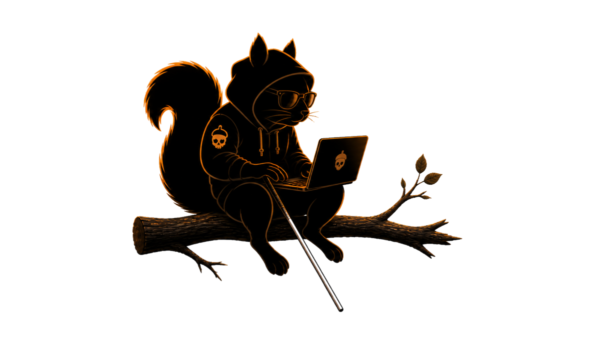
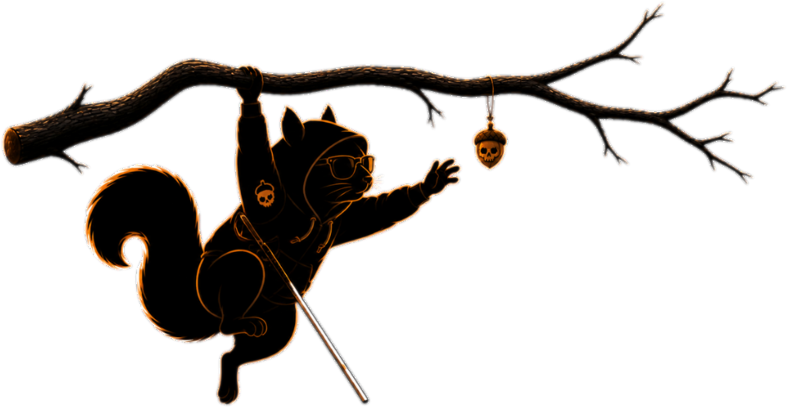

A macOS menu-bar app that wraps an elizaOS AgentRuntime. Chat with the agent, watch it think, browse what it remembers, hook it up to Discord / Telegram / iMessage, and run a bundled local embedding server — all from the tray. Expect it to break often. That's the whole point.
curl -fsSL https://raw.githubusercontent.com/Dexploarer/detour/main/scripts/install.sh | bash
Apple Silicon, macOS 14+. The installer downloads the latest stable
release from GitHub Releases,
strips the macOS quarantine flag, and drops Detour.app
into /Applications. For the rolling canary, append
-s -- canary.
There's a hierarchy here. Pick the one that matches what you're trying to do, not the one with the prettiest landing page.

The slice of capabilities I'm actively running today. Subject to rearrangement at the speed of curiosity.
Tray popup talks to your existing ChatGPT subscription via the system Codex CLI. No API key, no re-auth. Auto-detects from ~/.codex/auth.json.
llama.cpp server ships inside the .app. bge-small-en-v1.5, 384-dim, ~30 ms per embedding. Auto-downloads the model on first launch. No network after that. No API key. Free.
Every inbound + outbound message across Discord, Telegram, iMessage, and the in-app chat lands in one timeline. Recorded by a ChannelGateway that hooks elizaOS's MESSAGE_RECEIVED / MESSAGE_SENT events.
Programmatic notifications go through the real eliza pipeline — messageService.handleMessage → planner → action → REPLY. Captures the agent's reply text and back-annotates the inbox item.
Obsidian-style browser for the agent's memories, relationships, and the cross-cutting graph. Vector + substring search using the local embeddings.
Trajectories with the full LLM call sequence (prompt + response + duration), live runtime introspection, raw PGlite query console, log filtering. Watch your agent think.
Single .app bundle. No Electron, no Chromium. Bun runtime in-process, Electrobun for the native shell, llama.cpp for embeddings, PGlite for memory.